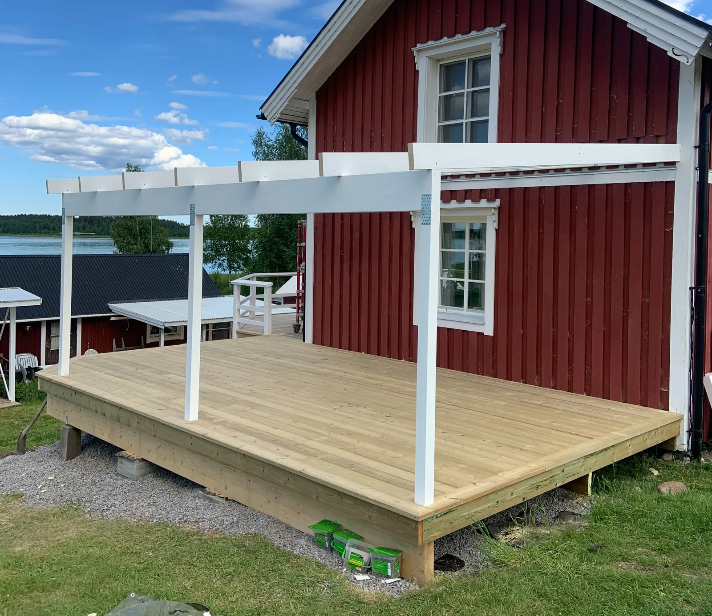
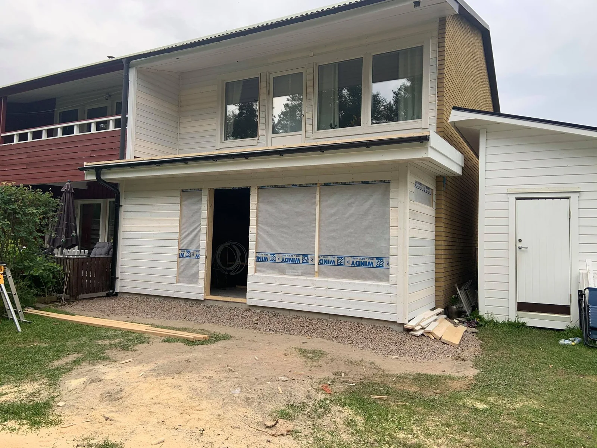
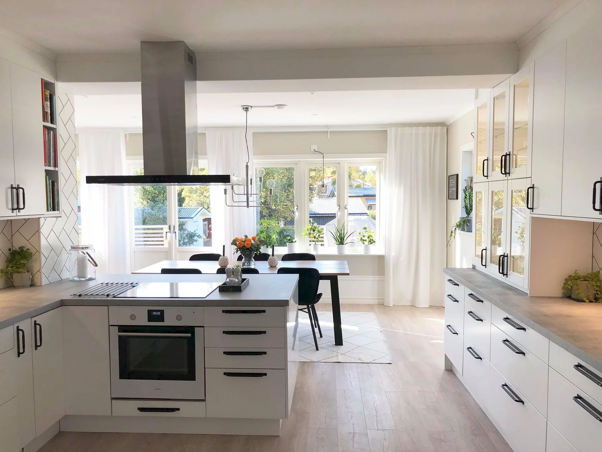
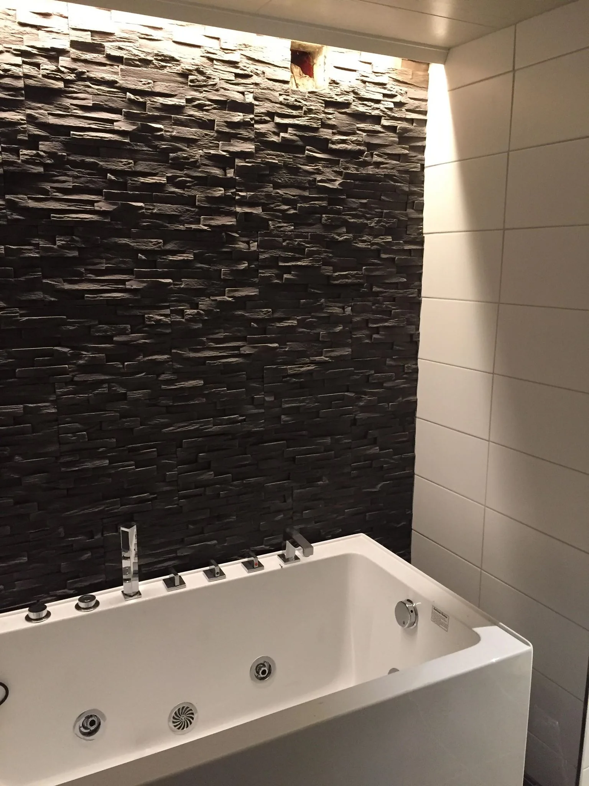
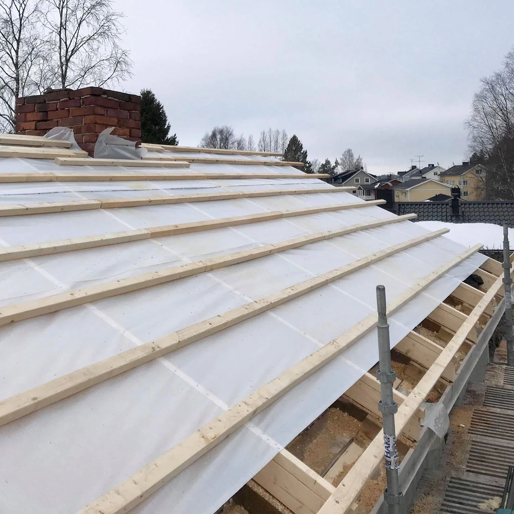
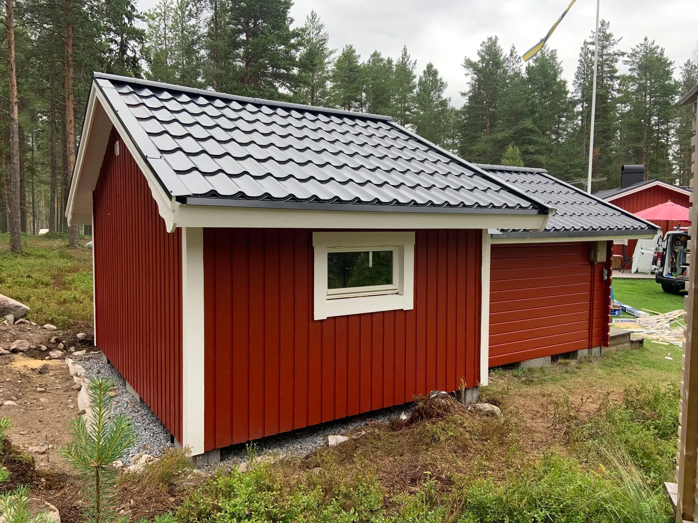

Våra tjänster
Ett helt hus.
Många möjligheter.
Vi hjälper dig med snickeri och renoveringar, från en mindre insats till ett större byggprojekt.

Snickeri & bygg
Träarbeten för stora och små projekt: tillbyggnader, garage, altaner, broar, golv, bastu och listverk.
Läs om snickeri & bygg
Fönster & dörrar
Byte av fönster, ytterdörrar och garageportar. Genom etablerade leverantörskontakter finns flera utföranden att välja mellan.
Läs om fönster & dörrar
Köksrenovering
Hjälp att planera och genomföra ditt nya kök. Arbetet kan samordnas med elektriker, VVS, plattsättare och målare.
Läs om köksrenovering
Badrumsrenovering
Planering och renovering av badrum tillsammans med andra hantverkargrupper, med möjlighet till en sammanhållen lösning.
Läs om badrumsrenovering
Takarbeten
Reparation, projektering och läggning av tak i nära samarbete med plåtslagare.
Läs om takarbeten
Fasadarbeten
Renovering av befintliga fasader och arbete med nya fasader i bland annat trä, tegel och plåt.
Läs om fasadarbetenKontakt
Vad vill du
ha hjälp med?
Berätta vad du har i tankarna. Vi hjälper dig att ta nästa steg.